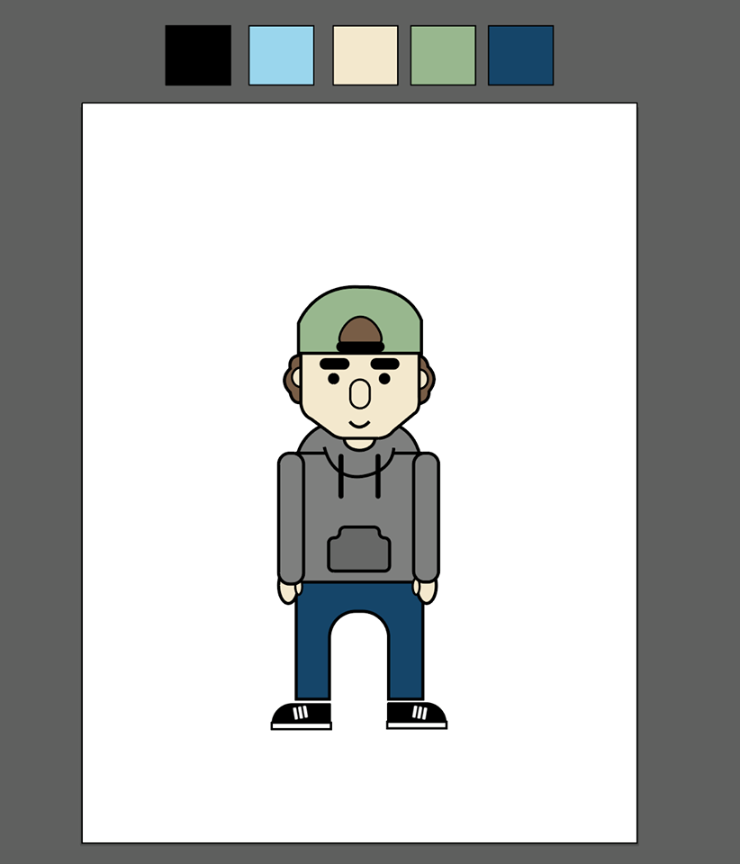
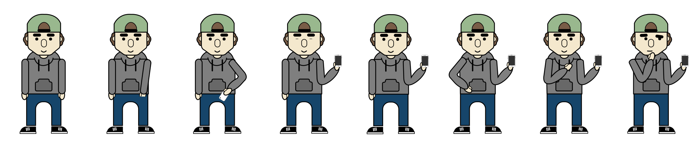
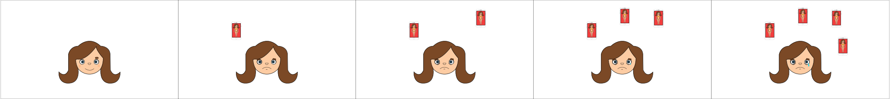
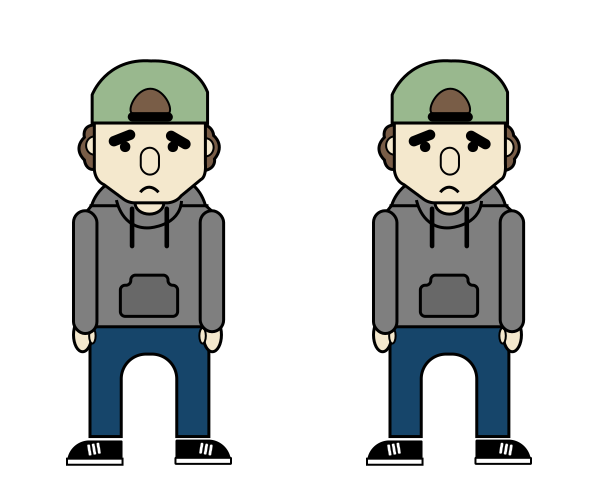
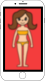
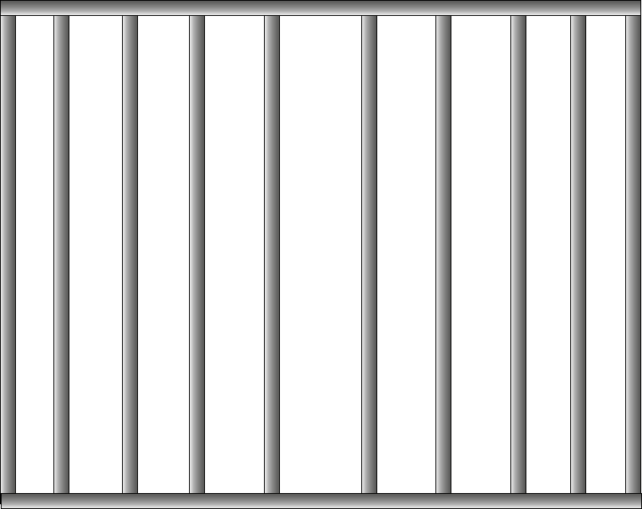

Karakterdesign





Den gamificerede annonce skal fange modtagerens opmærksomhed, hvorved vores gruppe fokuser på at implementere hverdagsting for en teenager (13-15 år). Endvidere opstilles der et muligt scenarie med et simpelt dilemma som målgruppen kan relatere til. Dertil skal der implementeres emojis som en velkendt faktorer i vores spil, eftersom vores teori bygger på at det er et væsentligt element i målgruppen. Derudover vil vi bruge humor, samt en overdreven udtryksform, som et væsentlig overordnet tema i vores spil. Det har vi valgt eftersom det gør spillet og historien mere underholdende og fængende, hvilket er med til at fange vores målgruppes interesse.
Da vi skulle designe vores karakterer tænkte vi over at lave dem uden køn, da det lige så vel kan være piger der deler billeder som drenge. Det valgte vi dog at droppe, da vi mente at det ville gøre vores spil upersonligt. Derudover ville det have en negativ effekt på vores spil hvis karaktererne ikke var mennesker, da vores målgruppe dermed ikke ville kunne relatere på samme måde.
Divserse funktioner på sociale medier, såsom Instagram Story og SnapChat, har en meget kort sekvenstid, hvilket kræver en enkelt og overskueligt udtryksform. Dette vil vi inkorporere i vores animation, som dermed ikke skal være meget længere end 15 sekunder.
Ideen bag vores historie er at inkorporere humor i en seriøs debat, for at fortælle en vigtig pointe. Plottet omhandler vores hovedkarakter der skal foretage et valg; Han modtager et billede af en pige, potentiel hævnporno, og han har mulighed for at lade billedet være eller sende det være.
Hvis han lader være og sletter billedet modtager han jubel og ros. Derimod hvis han sender det videre får det fatale konsekvenser for ham selv og hans veninde.
Begge historier ender med at påpege man kan kontakte Privatsnak, med et budskab om uanset hvad, så er det altid en god ide at kontakte dem i en situation som dem. Der inddrages elementer fra skræmmekampagner, på baggrund af det emne vi arbejder med. Det skal tages seriøst og derfor er man nødt til at vise konsekvenser bag dumme beslutninger. Dette gøres dog samtidig med at vi anvender humor, som letter tonen for animationen, og gør den mere tiltagende overfor vores ønskede publikum.
Michael er skilsmissebarn og er i gang med at blive undersøgt for ADHD. Han har eget tv ved begge hans forældre, egen computer og iPhone 5, med apps som Facebook og Snapchat. Pga skilsmissen skiftede han skole sidste år, og savner hans venner fra den tidligere skole. Hans interesser tæller karate, snapchat og fritidsklubben, og hans yndlingsfag i skolen er dansk, håndværk og idræt. Hans største sociale medie er SnapChat som han især bruger til karatestævner og med hans venner fra den gamle skole. Hans forbrug af Facebook består ofte af at tagge hans venner i relaterbare memes, og kontakt via Messenger.
Amalie Bor med sine forældre der stadig er gift. Hendes interesser tæller maling og tegning, hvortil hun bruger Instagram til at dele hendes projekter. Hun går til fodbold, hvor hun er midtbanespiller på tredje år og hertil bruger hun ofte Instagram Story til at rapportere om fodboldbegivenheder. På instagram har memes været med til at fremme forståelsen for kulturelle begivenheder, især under Præsident-valget i 2016, hvor hun lærte Trump og Clinton at kende via sjove memes. Hun har haft en kæreste i et halvt år nu, hvor meget af deres kommunikation ved afstand gøres via SnapChat og Messenger. Hendes Facebook forbrug består af opslag i begivenheder og grupper, mens hun ofte selv deler billeder fra hendes fodboldarrangementer med hendes venner og familie. Hun har sjældent anvendt sig af Facebook annoncer, eftersom det ofte er reklame for salg.
Teksten i annoncen lyder "Er I altid enige om jeres sjove billede skal deles? Vores spil stiller spørgsmål, og teksten i annoncen kan understøtte samme spørgsmål, for at fremme pointen.
Om torsdagen var der hovedsagelgt tre ting vi ville have svar på;
Vi havde 28 personer til at teste vores spil, hvoraf det hovedsageligt var klassekammerater. Dernæst var 9 test-personer nogle vi ikke gik i klasse med, og 3 af dem undervisere på skolen.
Desværre var ingen af test-personerne fra vores ønskede målgruppe, 13-15 år, hvilket selvfølgelig er en fejlkilde.
Hovedsageligt var der enighed om at animationen kunne øge kendskabet til PrivatSnak.dk, blandt målgruppen, eftersom den simple animation havde et forståeligt budskab og logoet var placeret solidt i animationen. Der var også enighed om at spillet kunne appellere yderligere end til 13-15 årige. De mest populære elementer i vores animationer var animationen efter man har valgt at dele billedet og det efterfølgende overdrevne udtryk, samt animationen af logoet.
En enkelt testperson tvivlede spillets interaktivitet, og påpegede at der skulle være mere egentlig "spil" i dens funktion. En anden synes ikke scenariet var hjernevridende eller fængende nok til at skabe en effektiv annonce for målgruppen. Mens en tredje testperson synes den var for informationspræget, frem for underholdende, men at det var en generelt tendens blandt spillene udviklet i vores klasse.
Vores testpersoner var enige om at vi havde skabt en gamificeret annonce, der med sin korte varighed og simple design kan spredes via Facebook og Instagram. De oplevede alle spillet på en fuldskærm MAC, og flere sagde at spillede ville tage sig bedre ud, hvis det foregik på en mobilskærm. Eftersom annoncen skal kunne køre på bl.a. Instagram er dette kun positivt. En ide ville være at teste spillet på mobilen, hvilket vi dog ikke gjorde på ferniseringsdagen.
Der var meget ros til vores animationer, vores overskuelige scenarie og simple design, som flere sagde havde en god energi. Størstedelen af vores testpersoner synes vores budskab var klart, mens enkelte påpegede at mere tekst ville være rart til at understøtte en mere klar pointe. Dette benyttede vi os af og indsatte teksten "Tænk før du deler" i vores annonce.
Vores ene lærer roste dens simplicitet og satte kun spørgsmåltegn ved at animationen anvendte forskellige stilarter. En anden underviser synes animationen var for simpel.
Theis Jensen
61 42 91 82
thei0139@stud.kea.dk
Viktor Emil Hansen
20 77 88 72
vikt0791@stud.kea.dk
Nikolaj Sørensen
27 84 51 56
niko3941@stud.kea.dk